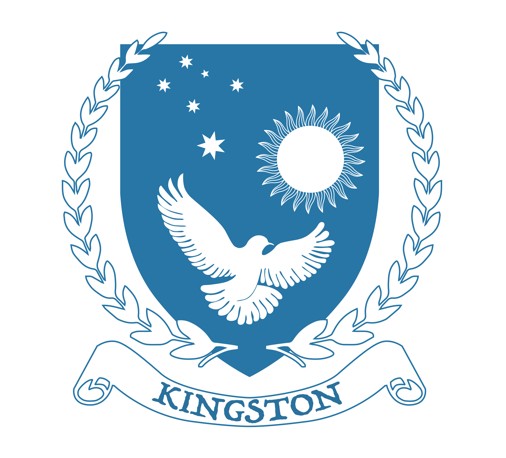
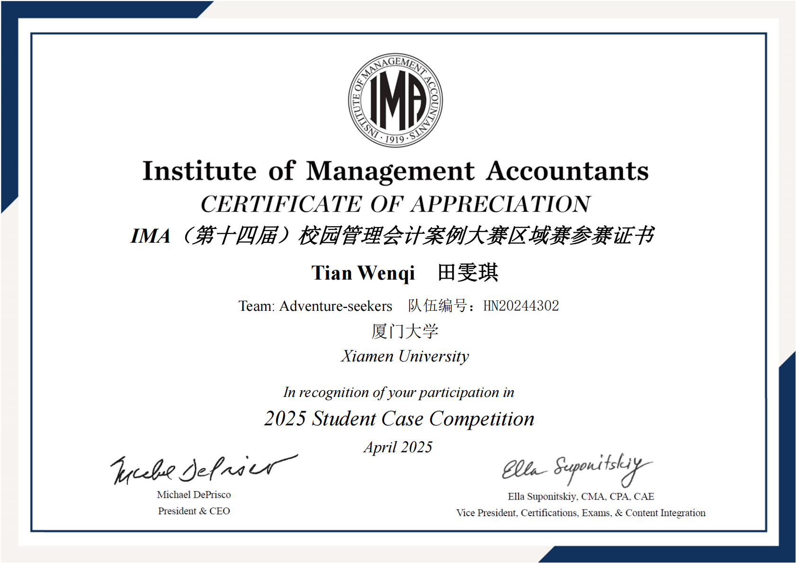
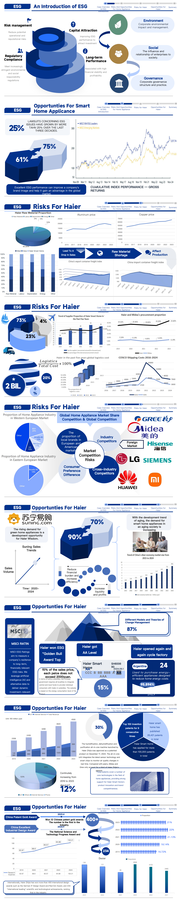
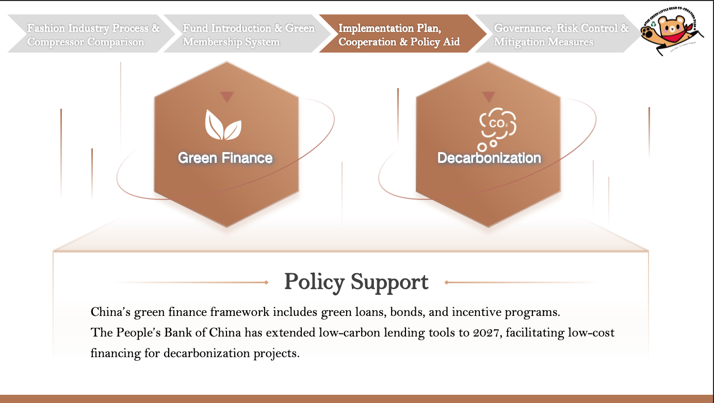
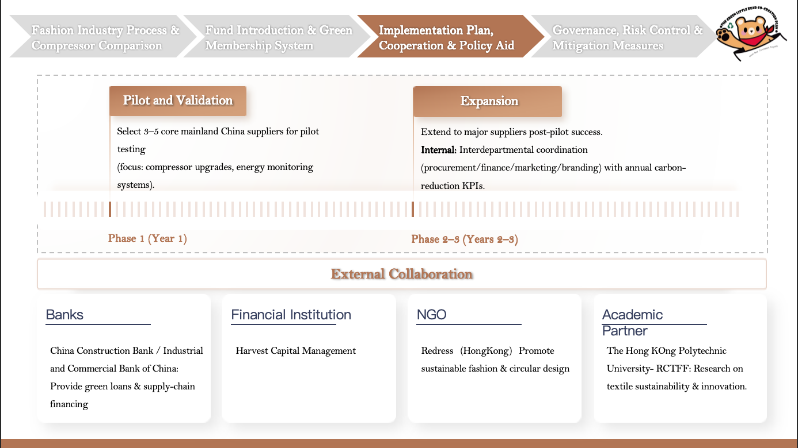
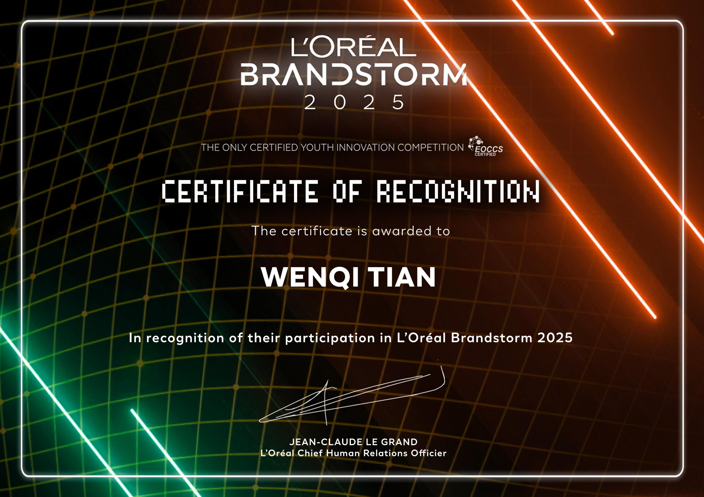
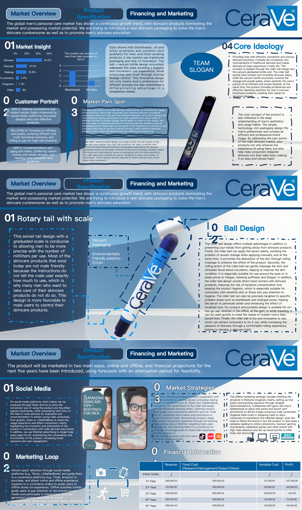
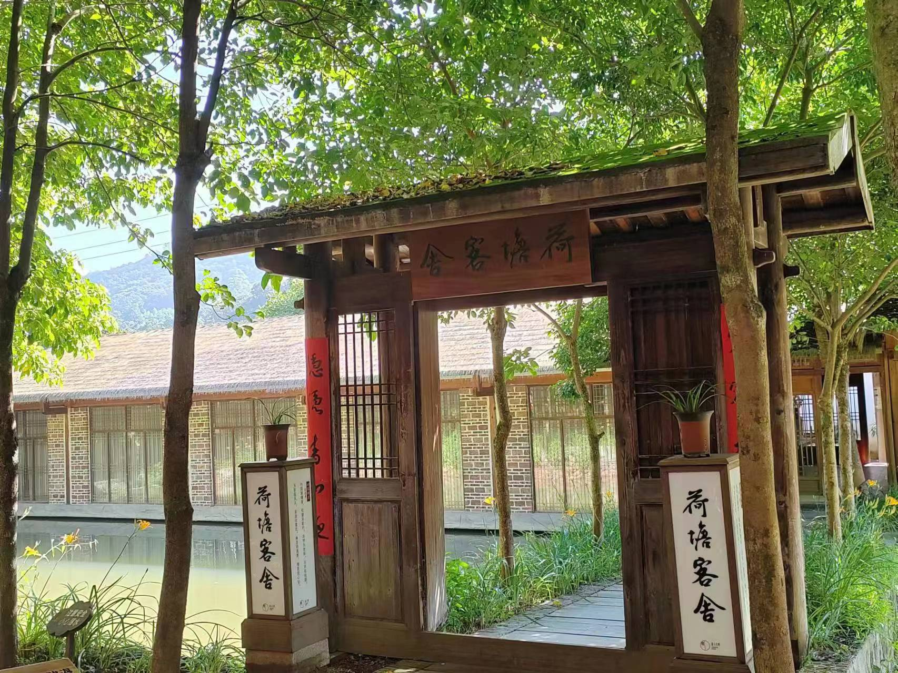
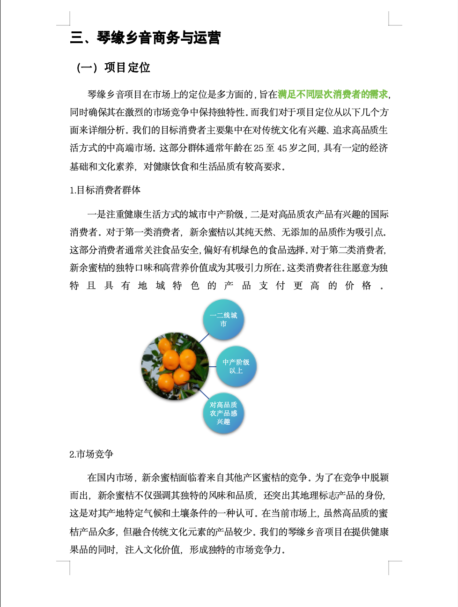
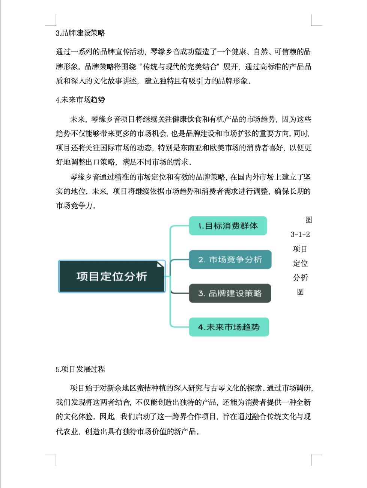

Data Thinking
Use data and platform insights to understand content performance and audience behaviour.
数据思维｜平台数据分析Marketing · Business Operations · Finance Background
I am a Bachelor of Business student majoring in Finance at RMIT University, with hands-on experience in digital marketing, social media operations, bilingual content creation, competitor research and business coordination.
我目前就读于 RMIT University 商科本科金融方向，具备澳洲教育机构市场实习经历， 熟悉社交媒体运营、中英文内容创作、竞品分析、宣传物料整理及商务沟通支持。
Finance background with marketing, business and operations experience
I am currently studying Bachelor of Business, majoring in Finance at RMIT University. My academic background helps me understand business logic, financial performance, market environment and data-driven decision-making.
我目前就读于 RMIT University 商科本科金融方向。金融专业背景让我能够从商业逻辑、 市场环境、数据表现和企业经营结果的角度理解问题，这也帮助我在市场运营和商务分析中 具备更强的结构化思维。
Through my marketing internship at Kingston Academy of Australia, I developed practical experience in social media operations, bilingual content creation, promotional material support, competitor research and outreach communication.
在 Kingston Academy of Australia 的市场实习中，我参与了社交媒体运营、中英文文案撰写、 宣传材料更新、竞品内容分析及合作方沟通支持。
Use data and platform insights to understand content performance and audience behaviour.
数据思维｜平台数据分析Create bilingual content for social media, promotional materials and brand communication.
内容创作｜中英文表达Support outreach, communication follow-up, document updates and cross-functional tasks.
商务沟通｜执行协调Work across English and Chinese contexts with overseas study and internship experience.
跨文化沟通｜海外背景Marketing, social media operations and business coordination

Nov 2025 – May 2026
Melbourne, Australia
Marketing Internship / 市场实习经历
During my internship at Kingston Academy of Australia, I supported the school’s digital marketing and communication work across social media operations, bilingual content creation, promotional material updates, competitor research and external outreach.
在 Kingston Academy of Australia 实习期间，我主要负责学校市场推广与传播支持工作， 包括社交媒体平台运营、中英文内容创作、宣传材料更新、竞品内容分析以及合作方沟通支持。 这段经历让我系统接触了教育机构的品牌传播、内容运营和跨文化沟通工作。
Managed content updates across Instagram, Facebook, LinkedIn, Xiaohongshu and other platforms to support brand visibility and student engagement.
社交媒体内容更新｜多平台运营维护Created bilingual promotional copy, campaign posts and communication materials for course promotion, school updates and student-facing information.
中英文文案撰写｜课程与活动宣传Reviewed platform insights, content types and audience locations to understand which formats performed better and supported future content planning.
平台数据整理｜内容表现分析Assisted with communication with potential agents, representatives and collaboration partners while supporting brochures, calendars and marketing documents.
合作方沟通｜宣传材料更新Sales & Market Expansion Internship / 销售与市场拓展实习
Jan 2025 – Feb 2025 · Hangzhou, China
During my internship at Suning.com, I supported field sales and local market expansion work in the home appliance retail sector. This experience helped me understand China’s offline retail environment, customer-facing operations, competitor activity and promotional execution.
在苏宁易购实习期间，我参与了家电零售行业的线下市场拓展与销售支持工作， 包括市场观察、竞品信息收集、促销活动支持及团队沟通协作。这段经历帮助我理解中国本土零售市场、 线下客户接触场景和销售策略执行方式。
Supported field market observation to understand local customer needs, store conditions and retail market dynamics.
市场观察｜线下零售环境走访Collected competitor information, including product pricing, promotional activity and market positioning, to support team decision-making.
竞品监测｜价格与促销信息Participated in promotional meetings and supported preparation for sales and market expansion activities.
促销活动支持｜销售活动参与Developed practical understanding of customer-facing communication, commercial awareness and teamwork in a fast-paced retail environment.
客户沟通意识｜商业敏感度提升ESG case analysis, marketing innovation and e-commerce entrepreneurship｜ ESG案例分析、营销创新与电商创业实践
Management Accounting Case / 管理会计案例
Role: Project Leader｜角色：项目主导者
Fully led the IMA case competition project, including case breakdown, research direction, team coordination, framework building and final presentation preparation. The project strengthened my ability to analyse business problems, structure complex information and lead a team under competition pressure.
参加 IMA 校园管理会计案例大赛，并由我主导整个项目推进，包括案例拆解、研究方向确定、 团队分工、分析框架搭建及最终展示内容统筹。该经历提升了我的商业问题分析能力、 团队管理能力和结构化表达能力。
Project Evidence｜成果展示

IMA Certificate｜IMA 参赛证书
Project Preview｜项目预览ESG Case Competition / ESG商业案例竞赛
Responsibility: Task 3｜负责部分：Task 3
Responsible for Task 3, focusing on implementation route, external cooperation, policy support, governance and risk-control logic for the proposed ESG solution.
主要负责 Task 3，包括实施路线设计、外部合作机制、政策支持、治理结构与风险控制逻辑。
Project Evidence｜成果展示

Policy Support｜政策支持
Implementation｜实施合作Marketing Innovation / 营销创新
Role: Team Member｜角色：团队成员
Worked on a men’s skincare product concept. Beyond supporting the presentation deck, I self-learned and created a hand-drawn animation video, including visual storytelling, editing and voiceover.
项目围绕男士护肤产品概念展开。除参与 PPT 制作外，我还自学制作手绘动画视频， 完成画面设计、视频剪辑及配音工作，用更生动的方式呈现产品概念与用户场景。
Project Evidence｜成果展示

Certificate｜参赛证书
PPT Preview｜方案预览E-commerce Entrepreneurship / 电商创业实践
Award: First Prize & Best Idea｜奖项：一等奖、最佳创意奖
Participated in the 14th National College Students E-commerce “Innovation, Creativity and Entrepreneurship” Challenge. I was mainly responsible for the project plan section, including business positioning, market logic and operation planning.
参加第十四届全国大学生电子商务“创新、创意及创业”挑战赛，项目获得一等奖及最佳创意奖。 我主要负责项目计划书部分，包括项目定位、市场逻辑、商业模式及运营规划内容。
Project Evidence｜成果展示

Project Photo｜项目图片
Business Plan 1｜计划书预览
Business Plan 2｜计划书预览Portfolio Display Note / 作品集展示说明
Some projects were completed through team collaboration. This website only presents selected personal responsibilities, certificates and non-sensitive previews. Full team files are not publicly downloadable.
由于部分项目为团队合作成果，本网站仅展示我的个人负责内容、证书及非敏感局部预览， 不公开提供完整团队文件下载。
Selected business cases connecting finance, marketing and strategy｜精选商业案例，连接金融分析、市场洞察与商业策略
Marketing internship data and platform insights


以数据与创意连接商业与人心，创造有影响力的解决方案。